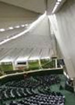

پذيرش > سایت نوشته ها > درباره لایح خانواده: زنان اصلاح طلب مقابل مردان محافظهكار /سایت روزآنلاین


 درباره لایح خانواده: زنان اصلاح طلب مقابل مردان محافظهكار /سایت روزآنلاین درباره لایح خانواده: زنان اصلاح طلب مقابل مردان محافظهكار /سایت روزآنلاین
22 آبان 1386 - - نسخه قابل چاپ
سارا اصفهانی (روز آنلاین): در جديدترين واکنش نسبت به لايحه "حمايت از خانواده" ارائه شده از سوي دولت احمدي نژاد به مجلس هفتم، شش تجمع اصلاح طلب زنان با ارسال نامه اي به مجلس هفتم، 23 ايراد وارد بر اين لايحه را متذکر شدند.
اين لايحه كه در اوايل مردادماه از سوي دولت نهم به مجلس ارائه شد در همان ابتداي كار اعتراضات و انتقادات فراواني را در پي داشت.از جمله نكاتي كليدياي كه معترضان به شدت نسبت به آن ايراد ميگرفتند قيد اين نكته بود كه مرد ميتواند بدون اجازه گرفتن از همسر اول خود اقدام به ازدواج مجدد نمايد. همچنين در ماده ديگري از اين لايحه وزارت امور اقتصادي و دارايي موظف شده است كه مهريههاي بالاتر از حد متعارف و غيرمنطقي را با توجه به وضعيت اقتصادي زوجين در هنگام ثبت ازدواج بعنوان ماليات وصول كند كه مهريه متعارف را وزارت اقتصاد براساس آييننامه اي تعيين خواهد نمود.
در همين ارتباط، در تاريخ 12 شهريور پنج تشكل اصلاح طلب كميسيون زنان جبهه مشاركت، جمعيت حمايت از حقوق بشر زنان، انجمن روزنامه نگاران زن ايران، جمعيت زنان نوانديش ايران و انجمن زنان پژوهشگر علوم انساني در يك بيانيه مشترك نسبت به اين لايحه اعتراض كردند. همچنين، خانه احزاب ايران نيز در نشست و ميزگردي با عنوان "بررسي و آسيب شناسي لايحه حمايت از خانواده" به بررسي اين لايحه پرداخت كه در آن افرادي مانند دكتر فاطمه راكعي، سهيلا جلودارزاده، دكتر صديقه وسمقي، دكتر مريم بهروزي، دكتر ابراهيم اميني و دكتر علي احمدي به ايراد سخنراني پرداختند. جبهه مشاركت نيز در دو برنامه جداگانه نسبت به اين لايحه اعتراض خود را بيان كرد و سخنرانان اين دو مراسم با تبيين مواضع خود به لحاظ حقوقي، قانوني و شرعي به مخالفت با ارائه چنين لايحهاي بيان داشتند. در اين برنامه ها افرادي چون دكتر محسن كديور، دكتر عليرضا علويتبار، حجتالاسلام هادي قابل، دكتر الهه كولايي، دكتر معصومه ابتكار و فخرالسادات محتشميپور سخنراني كردند.
به گفته يکي از فعالان اصلاح طلب، نكته جالب درخصوص اعتراضات صورت گرفته به اين لايحه اين مسئله است كه تا به امروز حتي يكي از نمايندگان زن مجلس هفتم نسبت به مفاد اين لايحه اعتراض نكرده است كه اين مسئله جاي تعجب زيادي را بر جاي گذاشته است.
در هر حال با وجود اعتراضات صورت گرفته به اين لايحه مجلس هفتم همچنان اين لايحه در دستور كار خود قرار داد و كميسيون فرهنگي مجلس در اولين اقدام بدون كمترين تغييرات بنيادي اين لايحه را از تصويب خود گذراند و پيش بيني صاحبنظران حاكي از آن است كه لايحه در صحن علني مجلس نيز بدون كمترين تغييراتي تصويب خواهد شد.
مجموعه اين مسائل باعث شده است كه برخي تشكلهاي اصلاح طلب زن مواجه گرديده و آنها در نامه اعتراض آميز خود به تبيين اعتراضات خود نسبت به اين لايحه پرداخته اند و 23 ايراد به آن گرفته اند.
شش تشكل مجمع زنان اصلاح طلب، جمعيت زنان مسلمان نوانديش(ايران)، جمعيت حمايت از حقوق بشر زنان، انجمن روزنامه نگاران زن ايران(رزا)، کميسيون زنان جبهه مشارکت ايران اسلامي و جامعه زنان انقلاب اسلامي در اين نامه اعتراضي خود ملاحظات و تأملات شان را در باب لايحه حمايت خانواده تشريح كردهاند.
در نامه مشترك اين تشكلها خطاب به نمايندگان مجلس هفتم آمده است: "در پي تصويب کليات لايحه حمايت خانواده در کميسيون فرهنگي مجلس مجموعه پيشنهادات و ديدگاه هاي ارائه شده توسط صاحبنظران و کارشناسان در ميزگرد هاي تخصصي متعدد برگزار شده ونيز در مقالات و بيانيه هاي منتشره پيرامون لايحه مذكور ارسال مي گردد. اميد است که با تعامل لازم و تبادل ديدگاه ها و نظرات کارشناسي وبا رفع نگراني هاي موجود، منافع زنان و به تبع آن منافع جامعه بيش از پيش ملحوظ و تضمين گردد."
در بخشي از اين نامه آورده شده كه بايستي مفاد اين لايحه "آيين دادرسي خانواده" تغيير يابد و در غير اين صورت مفاد ان بيشتر تداعي کننده "حمايت از مرد در خانواده" است و نه حمايت از رکن خانواده که اين امربيشتر به تزلزل بنيان خانواده مي انجامد تا حمايت و تحکيم آن.
تشكلهاي مزبور اعتراض خود را نسبت به آنچه كه دستکاري هاي دولت در لايحه پيشنهادي معاونت حقوقي و توسعه قضايي قوه قضائيه است ابراز داشته و تاکيد کرده اند: "حتي اندک حمايت هايي را نيز که در جهت احقاق حقوق زنان پيش بيني شده بود – هم اكنون - از بين رفته است."
در ادامه نامه ايرادات حقوقي و قانوني مطرح نسبت به مفاد و مواد اين لايحه تشريح شده است. در قسمتي از اين ايرادات آمده است: "اين لايحه عقب گردي جدي است، حتي به قبل از سال 1346 (سال تصويب اولين قانون حمايت خانواده) يعني حدود 40 سال قبل که حداقل در ماده 14 آن به "انجام اقدامات ضروري ودر صورت امکان تحقيق از زن فعلي" اشاره شده بود."
در بخش ديگري خاطرنشان شده است: "لايحه دولت از ديدگاه سنتي که تعدد زوجات را يک حکم دائمي ديني، واجب شرعي و براي همه شرايط مي داند ونه حکمي موقتي و براي شرايط اضطراري تبعيت کرده است، در حالي که از نگاه دين اصل بر تک همسري است و تعدد زوجات يک مباح شرعي مشروط است."
روزآنلاین
ارسال به
بالاترین
،
توییتر
،
فریندفید
،
فیسبوک
در همين بخش :
 یک خبر تلخ؟ یک قانونشکنی؟ یک تصمیم بخشنامهای جدید؟ یک خبر تلخ؟ یک قانونشکنی؟ یک تصمیم بخشنامهای جدید؟
چرا بایست به سکسوالیته پرداخت؟ / نفیسه آزاد
آزارجنسی خانگی؛ «قربانی» نه، «نجات یافته»
زنان، بزرگترین بازندگان بهار عرب
سانسور از دیدگاه جنسیتی/الهه امانی
ديگر بخش ها :
طرح یک میلیون امضا
|
مقالات
|
سایت نوشته ها
|
اخبار
|
گزارش كمپين
|
گفت و گو
|
علیه سکوت
|
كوچه به كوچه
|
نامه های شما
|
گزارش ویژه
|
گفتگو با اعضا
|
ویژه سالگرد کمپین
|
تصویر برابری
|
دل آرام علی
|
تریبون
|
مقالات
|
تاریخ شفاهی
|
خارج از چارچوب
|
کتابخانه
|
درباره کمپین
|
کمپین در شهرها
|
کمپین در بند
|
صدای تغییر
|
ویژه 22 خرداد
|
لایحه حمایت از خانواده
|
گالری
|
عشا مومنی
|
امیر یعقوبعلی
|
خدیجه مقدم
|
راحله عسگری زاده و نسیم خسروی
|
پروین اردلان،جلوه جواهری، مریم حسین خواه، ناهید کشاورز
|
زینب پیغمبرزاده
|
سعیده امین، سارا ایمانیان، محبوبه حسین زاده، ناهید کشاورز و همایون نامی
|
احترام شادفر
|
نسیم سرابندی زاده،فاطمه دهدشتی
|
وبلاگ مهمان
|
پرونده خرم آباد
|
دستگیری ها
|
مریم مالک
|
پرستو اللهیاری
|
مهرنوش اعتمادی
|
سمیه رشیدی
|
Other Languages
|
همراهان
|
«فراخوان کمپین ده روز با بهاره هدایت»
| English
|